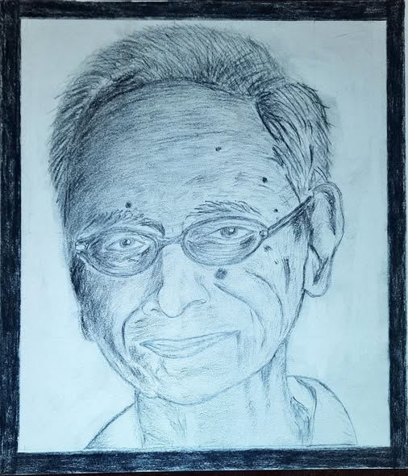
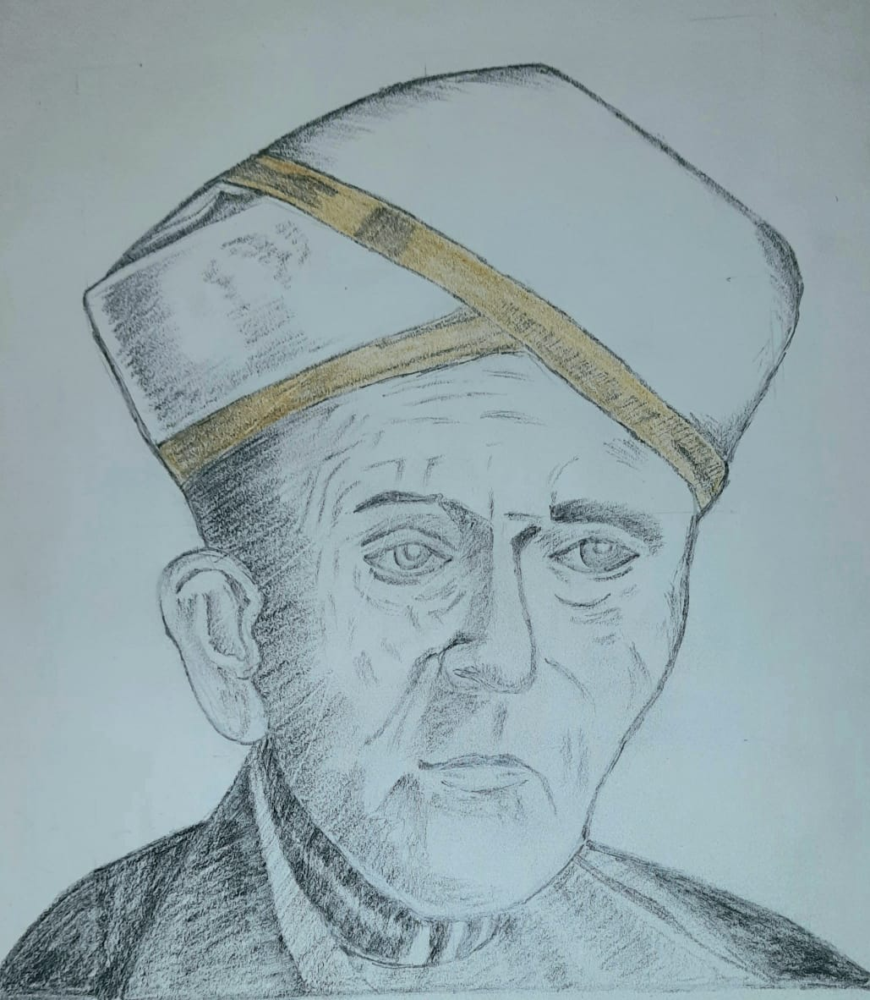

Dr. Sundararaman Chintamani's artistic soul finds its deepest expression in Carnatic music. Though not formally trained, his passion for this classical art form has driven him to contribute meaningfully — as a connoisseur, author, digital creator, and content producer.
🎵 Carnatic Music Connoisseur
A devoted rasika of Carnatic music since his teenage years, Sundararaman attends music concerts across the city during the Chennai Music Season. He has been contributing to Sri Parthasarathy Swami Sabha for their Sangeeth Sarathy newsletter every year, writing review articles on music concerts and lecdems.
For this dedication, he was honored with the prestigious "Rasika Shreshta" Award by GCMA. Receiving the award from mridangam maestro Sri T.V. Gopalakrishnan at Global Margazhi Fest 2025 was a surreal and humbling moment.
🏆 Rasika Shreshta Award - Global Margazhi Fest 2025
📚 RagaChintamani Author
In 2005, Sundararaman released RagaChintamani — a unique music manual that maps classical ragas used in Tamil film songs. Over 1,800 songs are classified under 160 ragas, with detailed arohanam, avarohanam, and special characteristics for each raga — creating an invaluable bridge between classical and popular music.
The book has sold 1,500+ copies and has been recommended by Annamalai University as a reference book for its BA Music course.
📖 Book Release Function (November 20, 2005)
RagaChintamani was released at Bharathiya Vidya Bhavan Mini Hall, Mylapore, Chennai. Kalaimaamani Mrs. Revathy Krishna (Veena artist) officially released the book, while Mr. T.S. Ranganathan of SUN TV received the first copy.
✍️ Literary Acclaim
- Sujatha — Read the book within a week and mentioned it in his famous "Katradhum Petradhum" column in Ananda Vikatan magazine
- Ashokamitran — Provided his appreciation for the unique compilation
- Ergo Magazine — Featured RagaChintamani with a review
🎬 Kamal Haasan with RagaChintamani
Actor Kamal Haasan browsed through the book at Book Point auditorium in Chennai. He asked several questions about the basics of Carnatic music and expressed interest in studying it further.
🏛️ Roja Muthiah Research Library
RagaChintamani is part of the prestigious Roja Muthiah Research Library collection, acknowledging its value as a reference work for Tamil music research.
Visit RagaChintamani Blog →
🌐 Digital Creator — KarnatikBuzz.com
Sundararaman developed KarnatikBuzz.com — a comprehensive website cataloging all musical events of the Chennai December Music Season. The uniquely user-friendly platform allows filtering by date, artist, sabha, venue, and area.
During the 2025 music season, KarnatikBuzz became the go-to ready reckoner for rasikas, attracting 18,000+ visitors in just 2 weeks.
Visit KarnatikBuzz.com →
🎬 YouTuber — Carnatic Music for Common Man
Sundararaman created a dedicated YouTube channel titled "Carnatic Music for Common Man" to disseminate the intricate details of this classical art form to everyday listeners, using Tamil as the medium.
The channel has garnered 1,000+ subscribers who appreciate his accessible approach to demystifying Carnatic music.
Subscribe on YouTube →
🎨 Water Color Artist
Sundararaman has been passionate about water coloring since childhood. This creative pursuit has remained a constant source of joy throughout his life. Many of his water color paintings are framed and proudly decorate his home — a personal gallery celebrating his artistic side.
🖼️ Portrait Paintings

Ashokamithran

Sir M. Visvesvaraya

Ralph C. Smedley

Sengottai Bhagavathar

Sriram Parasuram
🎨 Water Color Works
📖 Book Reviewer — Noolvi
An avid reader of Tamil literature, Sundararaman also reviews works by his favorite authors including Sujatha, Ashokamitran, and Indira Parthasarathy. His YouTube channel "Noolvi" (நூல்வி) — a shorter form of Nool Vimarsanam (Book Review) — shares his literary insights with fellow bibliophiles.
Subscribe to Noolvi →
✍️ Written Book Reviews
Apart from video reviews, Sundararaman has also written reviews of several Tamil books on his blogs. Some of the books reviewed:
🪙 Numismatist
Sundararaman has a deep passion for collecting coins and currencies. His carefully curated collection spans 15 countries — each piece a window into different cultures, histories, and economies. A hobby that combines history, geography, and art in the most tangible way.
🇮🇳 India
🌏 South Asia
🏜️ Middle East
🏯 East Asia
🌴 Southeast Asia
🌍 Africa
🗽 Americas
🏰 Europe
 Read More on LinkedIn →
Read More on LinkedIn →


.jpg)


.avif)